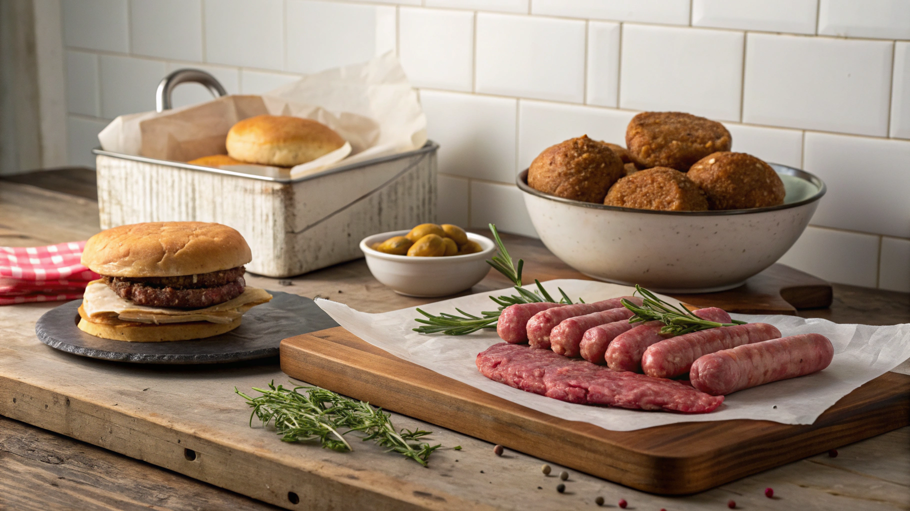
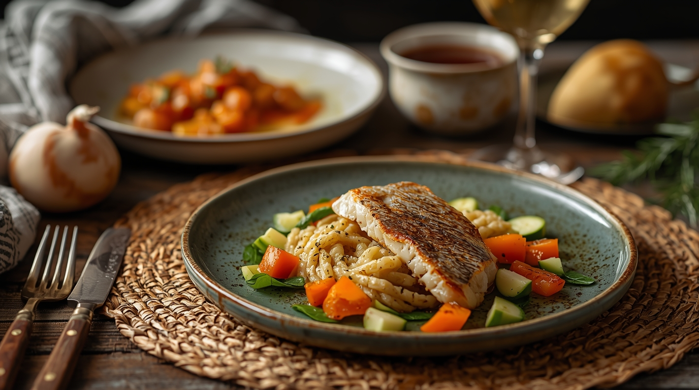
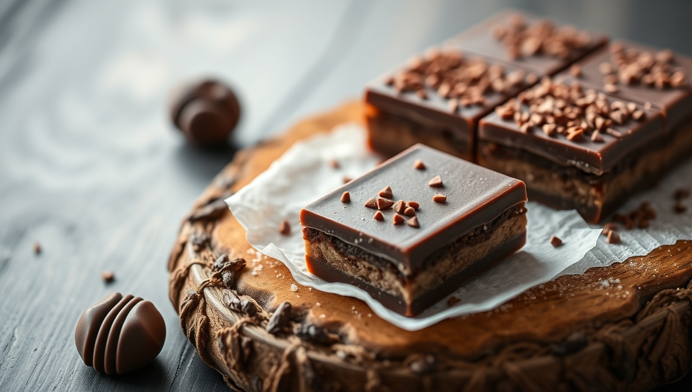
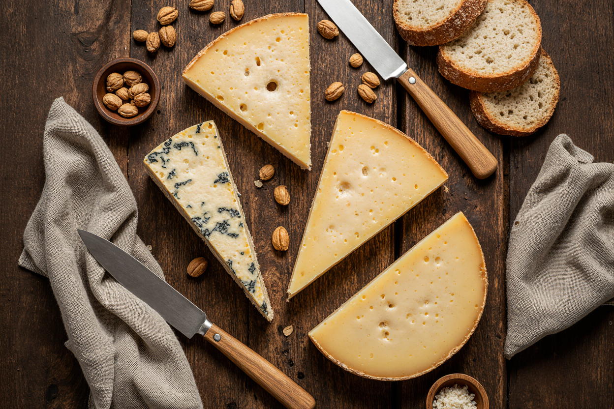

Fundada l'any 1921, aquesta casa és el reflex d'un negoci familiar que ha sabut preservar la seva essència al llarg de quatre generacions. Amb dedicació i constància, ens hem especialitzat en la venda i l'elaboració de productes càrnics i plats preparats, mantenint sempre el compromís amb la qualitat i la confiança.
Gràcies a la fidelitat dels nostres clients, hem pogut créixer i evolucionar sense perdre les arrels. Oferim un ampli assortiment de productes artesans, elaborats amb cura i respecte per la tradició, i seleccionem les millors carns per garantir un sabor autèntic i una experiència única.
Amb una mirada cap al futur i el cor posat en la tradició, continuem treballant dia a dia per oferir el millor, amb el tracte proper i familiar que ens caracteritza.
A la nostra carnisseria oferim una selecció completa de carns fresques i elaborats, pensada per satisfer els paladars més exigents. Treballem amb xai, vedella, porc i aviram, procedents de proveïdors de confiança que garanteixen una traçabilitat clara i unes condicions de cria respectuoses amb el benestar animal. Cada tall és escollit amb cura, mantenint el compromís amb la frescor, el sabor i la textura que defineixen un producte de qualitat superior.
A més de les carns tradicionals, disposem d’un ampli ventall de productes elaborats que combinen receptes artesanes amb ingredients seleccionats. Des d’hamburgueses casolanes fins a mandonguilles, croquetes o plats preparats, cada elaboració reflecteix l’experiència acumulada al llarg de generacions i l’atenció als detalls que ens caracteritza.
La nostra proposta de plats preparats ofereix una varietat pensada per a tots els gustos i moments. Des de receptes amb carn seleccionada, cuinades amb cura per preservar tot el seu sabor, fins a opcions amb pasta que combinen textures i salses artesanes.
També comptem amb elaboracions a base de peix, lleugeres i nutritives, ideals per a qui busca una alternativa saludable sense renunciar al gust. Les sopes, preparades amb ingredients frescos, aporten calidesa i tradició a la taula, mentre que els plats amb vegetals destaquen per la seva frescor, color i equilibri.
A la nostra botiga, els petits capricis no són simples complements: són instants de desig, gestos que transformen el quotidià en ritual. Els olis, premsats amb cura, conserven l’essència de la terra i aporten aroma i textura amb cada gota, ideals per potenciar plats o degustar amb pa artesà. Les olives, verdes, negres o farcides, són petites explosions de sabor que acompanyen l’aperitiu o donen caràcter a una amanida. El pa, cuit diàriament, destaca per la seva crosta cruixent i molla suau, convertint-se en base noble per a qualsevol combinació.
La pasta, elaborada amb farines seleccionades, és el punt de partida per a receptes que combinen tradició i creativitat. Les salses, des de les més suaus fins a les més intenses, activen el gust i completen l’experiència. I la xocolata, amb alt percentatge de cacau o farcida de sabors inesperats, sedueix els paladars més exigents amb un final dolç, intens i memorable. Cada producte és una invitació a gaudir sense pressa, a regalar-se un moment que no es necessita però que es desitja.
A la nostra botiga, els formatges són molt més que un aliment: són fragments de paisatge, memòria i caràcter. El de búfala aporta una cremositat intensa, amb matisos que sedueixen des del primer tast. La llet de cabra, amb el seu toc agre i fresc, dona lloc a formatges valents, lleugers però amb personalitat marcada.
Els d’ovella, més densos i untuosos, evoquen tradició i territori, amb sabors que perduren. I el de vaca, versàtil i suau, ofereix una gamma que va des de la tendresa fins a la maduresa més profunda. Cada peça és una invitació a explorar textures, aromes i intensitats, pensada per a paladars que busquen autenticitat i bon gust.
Els embotits de porc que oferim són el resultat d’un saber antic, transmès amb paciència i respecte pel producte. Cada peça és una síntesi de temps, textura i intensitat. El fuet, prim i aromàtic, conserva la seva essència amb un toc subtil de pebre. La llonganissa, curada lentament, revela sabors profunds i una consistència que convida a repetir. El xoriço, amb el seu punt fumat i especiat, encén el paladar amb caràcter. I el bull, suau i delicat, aporta una nota tradicional que reconforta.
Tots els embotits són elaborats amb carn seleccionada i condiments naturals, pensats per ser compartits, degustats amb pa rústic o gaudits en solitari, com un homenatge al gust autèntic.
Nota: Les dades que apareixen a continuació són perquè puguis contactar amb l'empresa responsable del disseny: SomaTIC Asturias. Si tens en ment un web, una solució digital o simplement vols explorar idees, estarem encantats d'escoltar-te.